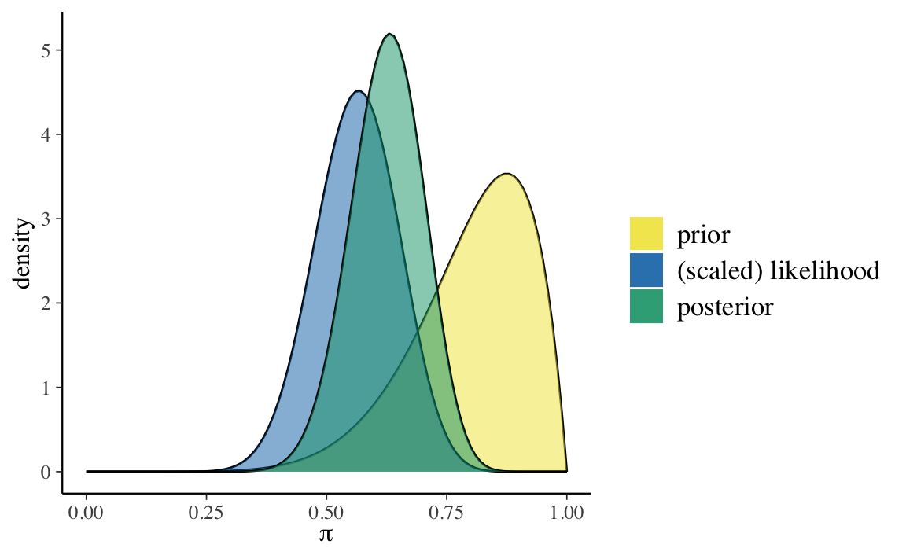
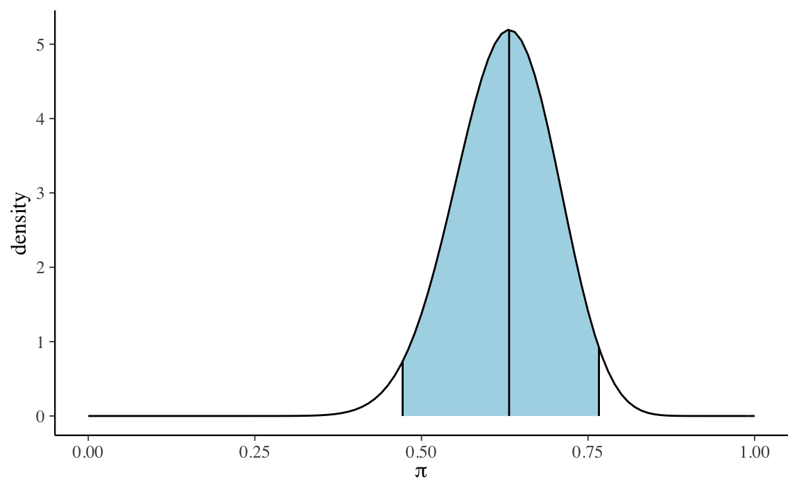

Capitolo 9 Sintesi a posteriori
La distribuzione a posteriori è un modo per descrivere il nostro grado di incertezza rispetto al parametro incognito (o rispetto ai parametri incogniti) oggetto dell’inferenza. La distribuzione a posteriori contiene tutte le informazioni disponibili sui possibili valori del parametro. Se il parametro esaminato è monodimensionale (o bidimensionale) è possibile fornire un grafico di tutta la distribuzione a posteriori \(p(\theta \mid y)\). Tuttavia, spesso vogliamo anche giungere ad una sintesi numerica della distribuzione a posteriori, soprattutto se il vettore dei parametri ha più di due dimensioni. A a questo proposito è possibile utilizzare le consuete statistiche descrittive, come media, mediana, moda, varianza, deviazione standard e i quantili. In alcuni casi, queste statistiche descrittive sono più facili da presentare e interpretare rispetto alla rappresentazione grafica della distribuzione a posteriori.
La stima puntuale della tendenza centrale della distribuzione a posteriori fornisce informazioni su quello che può essere considerato come il “valore più plausibile” del parametro. L’intervallo di credibilità fornisce invece un’indicazione dell’ampiezza dell’intervallo che contiene una determinata quota della massa della distribuzione a posteriori del parametro.
9.1 Stima puntuale
Per sintetizzare la distribuzione a posteriori in modo da giungere ad una stima puntuale di \(\theta\) si è soliti scegliere tra moda, mediana o media a seconda del tipo di distribuzione con cui si ha a che fare e della sua forma. Ogni stima puntuale ha una sua interpretazione.
- La media è il valore atteso a posteriori del parametro.
- La moda può essere interpretata come il singolo valore più credibile (“più plausibile”) del parametro, alla luce dei dati, ovvero il valore per il parametro \(\theta\) che massimizza la distribuzione a posteriori. Per questa ragione la moda viene detta massimo a posteriori, MAP. Il limite della moda quale statistica riassuntiva della distribuzione a posteriori è che, talvolta, tale distribuzione è multimodale e il MAP non è necessariamente il valore “più credibile”.
- La mediana è il valore del parametro tale per cui, su entrambi i lati di essa, giace il 50% della massa di probabilità a posteriori.
La misura di variabilità del parametro è la varianza a posteriori la quale, nel caso di una distribuzione a posteriori ottenuta per via numerica, si calcola con la formula della varianza che conosciamo rispetto alla tendenza centrale data dalla media a posteriori. La radice quadrata della varianza a posteriori è la deviazione standard a posteriori che descrive l’incertezza a posteriori circa il parametro di interesse nella stessa unità di misura dei dati.
Le procedure bayesiane basate sui metodi MCMC utilizzano un numero finito di campioni dalla distribuzione stazionaria, e una tale caratteristica della simulazione introduce un ulteriore livello di incertezza nella stima del parametro. L’errore standard della stima (in inglese Monte Carlo standard error, MCSE) misura l’accuratezza della simulazione. La deviazione standard a posteriori e l’errore standard della stima sono due concetti completamente diversi. La deviazione standard a posteriori descrive l’incertezza circa il parametro (l’ampiezza della distribuzione a posteriori) ed è una funzione della dimensione del campione; il MCSE descrive invece l’incertezza nella stima del parametro dovuta alla simulazione MCMC ed è una funzione del numero di iterazioni nella simulazione.
9.2 Intervallo di credibilità
Molto spesso la stima puntuale è accompagnata da una stima intervallare (abbiamo già incontrato questo aspetto nel Capitolo 4 discutendo lo schema beta-binomiale). Nella statistica bayesiana, se il parametro \(\theta \in \Theta\) è monodimensionale, si dice intervallo di credibilità un intervallo di valori \(I_{\alpha}\) che contiene la proporzione \(1 - \alpha\) della massa di probabilità della funzione a posteriori:
\[\begin{equation} p(\Theta \in I_{\alpha} \mid y) = 1 - \alpha. \tag{9.1} \end{equation}\]
L’intervallo di credibilità ha lo scopo di esprimere il nostro grado di incertezza riguardo la stima del parametro. Se il parametro \(\theta\) è multidimensionale, si parla invece di “regione di credibilità”.
La condizione (9.1) non determina un unico intervallo di credibilità al \((1 - \alpha) \cdot 100\%\). In realtà esiste un numero infinito di tali intervalli. Ciò significa che dobbiamo definire alcune condizioni aggiuntive per la scelta dell’intervallo di credibilità. Esaminiamo due delle condizioni aggiuntive più comuni.
9.2.1 Intervallo di credibilità a code uguali
Un intervallo di credibilità a code uguali a livello \(\alpha\) è un intervallo
\[ I_{\alpha} = [q_{\alpha/2}, 1 - q_{\alpha/2}], \]
dove \(q_z\) è un quantile \(z\) della distribuzione a posteriori. Per esempio, l’intervallo di credibilità a code uguali al 95% è un intervallo
\[ I_{0.05} = [q_{0.025}, q_{0.975}] \]
che lascia il 2.5% della massa di densità a posteriori in ciascuna coda.
9.2.2 Intervallo di credibilità a densità a posteriori più alta
Nell’intervallo di credibilità a code uguali alcuni valori del parametro che sono inclusi nell’intervallo possono avere una credibilità a posteriori più bassa rispetto a quelli esterni all’intervallo. L’intrevallo di credibilità a densità a posteriori più alta (in inglese High Posterior Density Interval, HPD) è invece costruito in modo tale da assicurare di includere nell’intervallo tutti i valori \(\theta\) che sono a posteriori maggiormente credibili. Graficamente questo intervallo può essere ricavato tracciando una linea orizzontale sulla rappresentazione della distribuzione a posteriori e regolando l’altezza della linea in modo tale che l’area sottesa alla curva sia pari a \(1 - \alpha\). Questo tipo di intervallo è il più stretto possibile, tra tutti i possibili intervalli di credibilità allo stesso livello di fiducia. Se la distribuzione a posteriori è simmetrica unimodale, l’intervallo di credibilità a densità a posteriori più alta corrisponde all’intervallo di credibilità a code uguali.
9.2.3 Interpretazione
L’interpretazione dell’intervallo di credibilità è molto intuitiva: l’intervallo di credibilità è un intervallo di valori all’interno del quale cade il valore del parametro incognito con un particolare livello di probabilità soggettiva. Possiamo dire che, dopo aver visto i dati crediamo, con un determinato livello di probabilità soggettiva, che il valore del parametro (ad esempio, la dimensione dell’effetto di un trattamento) abbia un valore compreso all’interno dell’intervallo che è stato calcolato, laddove per probabilità soggettiva intendiamo “il grado di fiducia che lo sperimentatore ripone nel verificarsi di un evento”. Gli intervalli di credibilità si calcolano con un software.
9.3 Un esempio concreto
Per fare un esempio pratico, consideriamo nuovamente i valori del BDI-II dei 30 soggetti clinici di Zetsche, Bürkner, and Renneberg (2019):
suppressPackageStartupMessages(library("bayesrules"))
df <- tibble(
y = c(26, 35, 30, 25, 44, 30, 33, 43, 22, 43,
24, 19, 39, 31, 25, 28, 35, 30, 26, 31,
41, 36, 26, 35, 33, 28, 27, 34, 27, 22)
)Un valore BDI-II \(\geq 30\) indica la presenza di un livello “grave” di depressione. Nel campione clinico di Zetsche, Bürkner, and Renneberg (2019),
sum(df$y > 29)
#> [1] 1717 pazienti su 30 manifestano un livello grave di depressione.
Supponiamo di volere stimare la distribuzione a posteriori della probabilità \(\theta\) di depressione “grave” nei pazienti clinici, così come viene misurata dal test BDI-II, imponendo su \(\theta\) una distribuzione a priori \(\mbox{Beta}(8, 2)\).
Sappiamo che il modello Beta-Binomiale può essere espresso nella forma seguente:
\[\begin{align} Y | \theta & \sim \mbox{Bin}(30, \theta) \notag\\ \theta & \sim \mbox{Beta}(8, 2) \notag \end{align}\]
con una corrispondente distribuzione a posteriori \(\mbox{Beta}(25, 15)\):
\[\begin{equation} f(\theta | y = 17) = \frac{\Gamma(25 + 15)}{\Gamma(25)\Gamma(15)}\theta^{25-1} (1-\theta)^{15-1} \;\; \text{ for } \theta \in [0,1] \; . \tag{9.2} \end{equation}\]
plot_beta_binomial(alpha = 8, beta = 2, y = 17, n = 30)
9.3.1 Stime puntuali della distribuzione a posteriori
Una volta trovata l’intera distribuzione a posteriori, quale valore di sintesi è necessario riportare? Questa sembra una domanda innocente, ma in realtà è una domanda a cui è difficile rispondere. La stima bayesiana dei parametri è fornita dall’intera distribuzione a posteriori, che non è un singolo numero, ma una funzione che mappa ciascun valore del parametro ad un valore di plausibilità. Quindi non è necessario scegliere una stima puntuale. In linea di principio, una stima puntuale non è quasi mai necessaria ed è spesso dannosa in quanto comporta una perdita di informazioni.
Tuttavia talvolta una tale sintesi è richiesta. Diverse risposte sono allora possibili. La media della distribuzione a posteriori per \(\theta\) è
\[ \E(\pi \mid y = 17) = \frac{\alpha}{\alpha + \beta} = \frac{25}{25+15} = 0.625. \]
Una stima del massimo della probabilità a posteriori, o brevemente massimo a posteriori, MAP (da maximum a posteriori probability), è la moda della distribuzione a posteriori. Nel caso presente, una stima del MAP può essere ottenuta nel modo seguente:
\[ \Mo(\pi \mid y = 17) = \frac{\alpha-1}{\alpha + \beta-2} = \frac{25-1}{25+15-2} = 0.6316. \]
Gli stessi risultati si ottiengono usando la chiamata a bayesrules::summarize_beta_binomial():
summarize_beta_binomial(alpha = 8, beta = 2, y = 17, n = 30)
#> model alpha beta mean mode var sd
#> 1 prior 8 2 0.800 0.8750000 0.014545455 0.1206045
#> 2 posterior 25 15 0.625 0.6315789 0.005716463 0.0756073La mediana si ottiene con
qbeta(.5, shape1 = 25, shape2 = 15)
#> [1] 0.62710319.3.2 Intervallo di credibilità
È più comune sintetizzare la distribuzione a posteriori mediante l’intervallo di credibilità. Per esempio, l’intervallo di credibilità a code uguali al 95%
plot_beta_ci(alpha = 25, beta = 15, ci_level = 0.95)
è dato dalla chiamata
qbeta(c(0.025, 0.975), 25, 15)
#> [1] 0.4717951 0.7663607Il calcolo precedente evidenzia l’interpretazione intuitiva dell’intervallo di credibilità. Tale intervallo, infatti, può essere interpretato come la probabilità che \(\theta\) assuma valori compresi tra 0.472 e 0.766:
\[ P(\theta \in (0.472, 0.766) | Y = 17) = \int_{0.472}^{0.766} f(\theta \mid y=17) d\theta = 0.95, \]
ovvero
postFun <- function(theta) {
gamma(25 + 15) /
(gamma(25) * gamma(15)) * theta^24 * (1 - theta)^14
}
integrate(
postFun,
lower = 0.4717951,
upper = 0.7663607
)$value
#> [1] 0.95Possiamo costruire diversi intervalli di credibilità a code equivalenti. Ad esempio, l’intervallo di credibilità compreso tra il 25-esimo e il 75-esimo percentile è
qbeta(c(0.25, 0.75), 25, 15)
#> [1] 0.5743878 0.6778673ovvero, abbiamo una certezza a posteriori del 50% che la probabilità di depressione grave tra i pazienti clinici sia un valore compreso tra 0.57 e 0.68.
Non esiste un livello credibile “corretto”. I ricercatori, utilizzano vari livelli, ad esempio 50%, 80% o 95%, a seconda del contesto dell’analisi. Ciascuno di questi intervalli fornisce un’immagine diversa della nostra comprensione della distribuzione a posteriori del parametro di interesse.
Non è inoltre necessario riportare l’intervallo di credibilità a code uguali. Se la distribuzione a posteriori è fortemente asimmetrica è più sensato riportare l’intervallo di credibilità a densità a posteriori più alta. L’intervallo HPD risulta più semplice da determinare quando la distribuzione a posteriori viene approssimata con il metodo MCMC.
9.3.3 Probabilità della distribuzione a posteriori
Il test di ipotesi è un compito comune dell’analisi della distribuzione a posteriori (si veda anche il Capitolo 4). Supponiamo che si voglia conoscere la probabilità a posteriori che \(\theta\) sia superiore a 0.5. Per sapere quanto credibile sia l’evento \(\theta > 0.5\) possiamo calcolare il seguente integrale:
\[ P(\theta > 0.5 \; \mid \; y = 17) = \int_{0.5}^{1}f(\theta \mid y=17)d\theta \;, \]
dove \(f(\cdot)\) è la distribuzione \(\mbox{\Beta}(25, 15)\):
pbeta(0.5, shape1 = 25, shape2 = 15, lower.tail = FALSE)
#> [1] 0.9459355il che è equivalente a:
postFun <- function(theta) {
gamma(25 + 15) / (gamma(25) * gamma(15)) * theta^24 * (1 - theta)^14
}
integrate(
postFun,
lower = 0.5,
upper = 1
)$value
#> [1] 0.9459355È anche possibile formulare un test di ipotesi contrastando due ipotesi contrapposte. Per esempio, \(H_1: \theta \geq 0.5\) e \(H_2: \theta < 0.5\). Ciò consente di calcolare l’odds a posteriori di \(\theta > 0.5\):
\[\begin{equation} \text{poterior odds} = \frac{H_1 \mid y = 17}{H_2 \mid y = 17} \end{equation}\]
ovvero
posterior_odds <-
pbeta(0.5, shape1 = 25, shape2 = 15, lower.tail = FALSE) /
pbeta(0.5, shape1 = 25, shape2 = 15, lower.tail = TRUE)
posterior_odds
#> [1] 17.49642L’odds a posteriori rappresenta l’aggiornamento delle nostre credenze dopo avere osservato \(y = 17\) in \(n = 30\). L’odds a priori di \(\theta > 0.5\) era:
prior_odds <-
pbeta(0.5, shape1 = 8, shape2 = 2, lower.tail = FALSE) /
pbeta(0.5, shape1 = 8, shape2 = 2, lower.tail = TRUE)
prior_odds
#> [1] 50.2Il fattore di Bayes (Bayes Factor; BF) confronta gli odds a posteriori con gli odds a priori e quindi fornisce informazioni su quanto sia mutata la nostra comprensione relativa a \(\theta\) dopo avere osservato i nostri dati del campione:
\[ \text{BF} = \frac{\text{odds a posteriori}}{\text{odds a priori}}. \]
Nel caso presente abbiamo
BF <- posterior_odds / prior_odds
BF
#> [1] 0.3485343Quindi, dopo avere osservato i dati, gli odds a posteriori della nostra ipotesi a proposito di \(\theta\) sono pari a solo il 34% degli odds a priori.
Per fare un altro esempio, consideriamo invece il caso in cui le credenze a priori rivelano una credenza diametralmente opposta rispetto a \(\theta\) che nel caso considerato in precedenza, ovvero \(\mbox{Beta}(2, 8)\). In questo secondo caso, la distribuzione a posteriori diventa
summarize_beta_binomial(alpha = 2, beta = 8, y = 17, n = 30)
#> model alpha beta mean mode var sd
#> 1 prior 2 8 0.200 0.1250000 0.014545455 0.12060454
#> 2 posterior 19 21 0.475 0.4736842 0.006082317 0.07798921e il BF è
posterior_odds <-
pbeta(0.5, shape1 = 19, shape2 = 21, lower.tail = FALSE) /
pbeta(0.5, shape1 = 19, shape2 = 21, lower.tail = TRUE)
prior_odds <-
pbeta(0.5, shape1 = 2, shape2 = 8, lower.tail = FALSE) /
pbeta(0.5, shape1 = 2, shape2 = 8, lower.tail = TRUE)
BF <- posterior_odds / prior_odds
BF
#> [1] 30.07239In alre parole, in questo secondo esempio gli odds a posteriori della nostra ipotesi a proposito di \(\theta\) sono aumentati di 30 volte rispetto agli odds a priori.
In generale, in un test di ipotesi che contrappone un’ipotesi sostantiva \(H_a\) ad un’ipotesi nulla \(H_0\) il BF è un rapporto di odds per l’ipotesi sostantiva:
\[ \text{Bayes Factor} = \frac{\text{posterior odds}}{\text{prior odds}} = \frac{P(H_a \mid Y) / P(H_0 \mid Y)}{P(H_a) / P(H_0)} \; . \]
Essendo un rapporto, il BF deve esere valutato rispetto al valore di 1. Ci sono tre possibilità:
- BF = 1: La credibilità di \(H_a\) non è cambiata dopo avere osservato i dati.
- BF > 1: La credibilità di \(H_a\) è aumentata dopo avere osservato i dati. Quindi maggiore è BF, più convincente risulta l’evidenza per \(H_a\).
- BF < 1: La credibilità di \(H_a\) è diminuita dopo avere osservato i dati.
Non ci sono delle soglie universalmente riconosciute per interpretare il BF. Per esempio, Lee and Wagenmakers (2014) propongono il seguente schema:
| BF | Interpretation |
|---|---|
| > 100 | Extreme evidence for \(H_a\) |
| 30 - 100 | Very strong evidence for \(H_a\) |
| 10 - 30 | Strong evidence for \(H_a\) |
| 3 - 10 | Moderate evidence for \(H_a\) |
| 1 - 3 | Anecdotal evidence for \(H_a\) |
| 1 | No evidence |
| 1/3 - 1 | Anecdotal evidence for \(H_0\) |
| 1/10 - 1/3 | Moderate evidence for \(H_0\) |
| 1/30 - 1/10 | Strong evidence for \(H_0\) |
| 1/100 - 1/30 | Very strong evidence for \(H_0\) |
| < 1/100 | Extreme evidence for \(H_0\) |
Tuttavia, è importante notare che l’opinione maggiormente diffusa nella comunità scientifica sia quella che incoraggia a non trarre conclusioni rigide dai dati utilizzando dei criteri fissati una volta per tutte. Pertanto, non esiste una soglia univoca per il BF che consente di classificare le ipotesi dei ricercatori nelle due categorie “vero” o “falso”. Invece, è più utile adottare una pratica più flessibile capace di tenere in considerazione il contesto e le potenziali implicazioni di ogni singolo test di ipotesi. Inoltre, è stato molte volte ripetuto che la distribuzione a posteriori è molto più informativa di una decisione binaria: la rappresentazione di tutta la distribuzione a posteriori fornisce una misura olistica del nostro livello di incertezza riguardo all’affermazione (il parametro, ovvero l’ipotesi) che viene valutata.
9.4 La funzione di perdita attesa
Un modo razionale per giungere ad una decisione statistica utilizzando l’intera distribuzione a posteriori è quello di usare la funzione di perdita (loss function). La funzione di perdita è concetto nella teoria delle decisioni statistiche che consente di quantificare il costo derivante dalla decisione di scegliere quale stima del parametro il valore \(\theta_0\) quando esso in realtà ha il valore \(\theta\).
Per chiarire che cosa si intende per funzione di perdita, esaminiamo qui un semplice esempio nel quale vengono considerati due soli valori di probabilità per l’evento target, anziché l’intera distribuzione a posteriori (il codice è ricavato da Schmettow 2021).
Si consideri la scelta di prendere o meno l’ombrello nell’uscire di casa. Le previsioni del tempo sono le seguenti:
Risultato <-
tibble(
risultato = c("piove", "non piove"),
prob = c(0.6, 0.4)
)
Risultato
#> # A tibble: 2 × 2
#> risultato prob
#> <chr> <dbl>
#> 1 piove 0.6
#> 2 non piove 0.4Le azioni possibili sono: prendo / non prendo l’ombrello:
Azione <-
tibble(azione = c("prendo l'ombrello", "non prendo l'ombrello"))
Azione
#> # A tibble: 2 × 1
#> azione
#> <chr>
#> 1 prendo l'ombrello
#> 2 non prendo l'ombrelloAssegniamo un costo massimo (4) alla conseguenza peggiore (“non prendo l’ombrello e piove”) e uno minimo (0) alla conseguenza migliore (“non prendo l’ombrello e non piove”):
Costi <-
expand.grid(
azione = Azione$azione,
risultato = Risultato$risultato
) %>%
inner_join(Risultato) %>%
mutate(costo = c(2, 4, 2, 0))
Costi
#> azione risultato prob costo
#> 1 prendo l'ombrello piove 0.6 2
#> 2 non prendo l'ombrello piove 0.6 4
#> 3 prendo l'ombrello non piove 0.4 2
#> 4 non prendo l'ombrello non piove 0.4 0Calcoliamo ora il costo atteso delle due azioni tenuto conto delle probabilità che si verifichi l’uno o l’altro stato del mondo (ricordiamo che piove/non piove hanno una probabilità rispettivamente del 40% e del 60%), ovvero ponderiamo il costo di ogni azione con la probabilità che si verifichi l’evento corrispondente:
Util <-
Costi %>%
mutate(costo_condizionato = prob * costo) %>%
group_by(azione) %>%
summarise(costo_atteso = sum(costo_condizionato))
Util
#> # A tibble: 2 × 2
#> azione costo_atteso
#> <fct> <dbl>
#> 1 prendo l'ombrello 2
#> 2 non prendo l'ombrello 2.4La regola di minimizzazione dei costi induce a scegliere l’alternativa che comporta il valore più basso: nel nostro esempio “prendere l’ombrello”.
La stessa logica dell’esempio può essere usata anche nel momento in cui, anziché avere solo due valori per la probabilità dello stato del mondo in questione (per esempio, pioverà / non pioverà), utilizziamo l’intera distribuzione a posteriori (per esempio, quella relativa alla previsione di pioggia). Concludiamo questi brevi accenni relativi alla funzione di perdita con una considerazione di McElreath (2020) il quale nota che, anche se gli statistici e i teorici dei giochi sono da tempo interessati alle funzioni di perdita e alle relazioni che intercorrono tra esse e l’inferenza bayesiana, i ricercatori non le usano quasi mai in modo esplicito.
Commenti e considerazioni finali
Questo capitolo introduce le procedure di base per la manipolazione della distribuzione a posteriori. Lo strumento fondamentale che è stato utilizzato è quello fornito dai campioni di valori del parametro che vengono estratti dalla distribuzione a posteriori. Lavorare con campioni di valori del parametro estratti dalla distribuzione a posteriori trasforma un problema di calcolo integrale in un problema di riepilogo dei dati. Abbiamo visto le procedure maggiormente usate che consentono di utilizzare i campioni a posteriori per produrre indici di sintesi della distribuzione a posteriori: gli intervalli di credibilità e le stime puntuali.